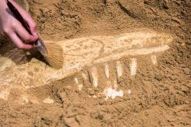
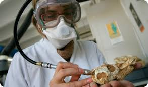
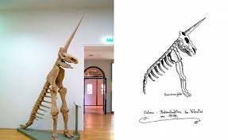
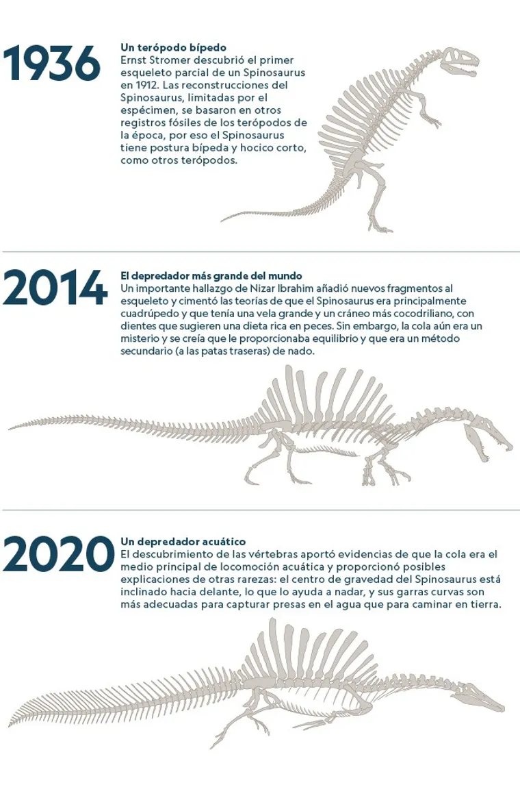
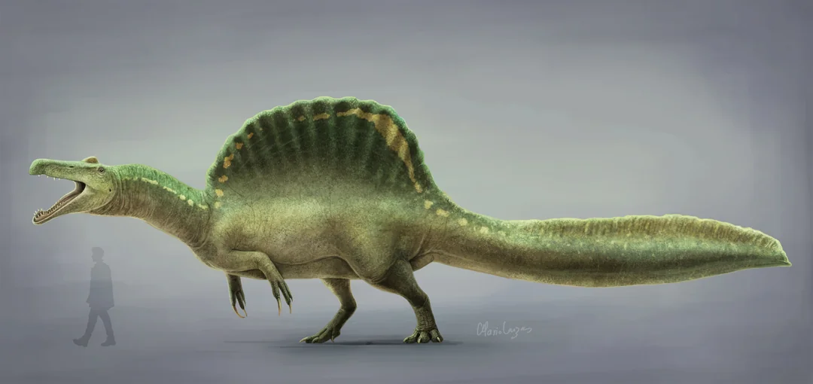

Explora el mundo de los dinosaurios, fósiles y recreaciones de
esqueletos.
Recreación de Esqueletos de Dinosaurios
Explorando cómo se reconstruyen los esqueletos de dinosaurios a partir
de fósiles mediante un proceso que combina ciencia, arte y tecnología
de vanguardia.
1. Introducción
La reconstrucción de esqueletos de dinosaurios es un proceso
complejo que combina paleontología, anatomía comparada y tecnología
moderna. Gracias a estos métodos, los científicos pueden determinar
cómo se veían, se movían y vivían estos animales prehistóricos,
proporcionando valiosa información sobre la evolución y los
ecosistemas del pasado.
2. Proceso de Reconstrucción
Descubrimiento y Excavación
Los fósiles se descubren en excavaciones y se extraen
cuidadosamente para su estudio. Este proceso puede durar semanas o
incluso meses, ya que los paleontólogos deben utilizar
herramientas especializadas para evitar dañar los restos. Una vez
recuperados, los fósiles se transportan a laboratorios donde se
analizan en detalle.

Limpieza y Estudio
Los huesos se limpian y comparan con otros dinosaurios para
determinar su estructura. Los especialistas eliminan cualquier
sedimento adherido a los fósiles y los someten a análisis de rayos
X o tomografías computarizadas para obtener una imagen más
detallada. Este proceso ayuda a identificar posibles especies
nuevas o corregir errores en reconstrucciones previas.

Reconstrucción Digital y Física
Se utilizan escaneos 3D y modelado digital para recrear partes
faltantes. Mediante programas de software avanzados, los
científicos pueden realizar simulaciones de movimiento y
biomecánica, lo que ayuda a entender cómo caminaban, corrían o
incluso cazaban estos animales. Luego, los modelos digitales
pueden convertirse en réplicas físicas utilizando impresión 3D.

3. Caso del Spinosaurus
El Spinosaurus ha sido objeto de múltiples reconstrucciones debido
a nuevos hallazgos. Fue descubierto por primera vez en Egipto en
la década de 1910, pero sus fósiles originales fueron destruidos
durante la Segunda Guerra Mundial. En las últimas décadas, nuevos
restos han cambiado drásticamente nuestra comprensión de este
dinosaurio.

Inicialmente se pensaba que caminaba en dos patas, pero nuevas
evidencias sugieren que tenía una cola adaptada a la natación.
Esto indica que podría haber sido un depredador semiacuático, algo
único entre los grandes dinosaurios carnívoros. Su estructura ósea
y la forma de sus extremidades sugieren que pasaba una gran parte
de su tiempo en el agua, cazando peces gigantes en los ríos del
Cretácico.

Acerca de Nosotros
En Paleontología Dinámica, nuestra misión es explorar, descubrir y
compartir el fascinante mundo de los dinosaurios. A través de
estudios de fósiles, recreaciones científicas y tecnología de
vanguardia, nos dedicamos a revivir la historia prehistórica para
educar e inspirar a futuras generaciones.
Nuestro equipo está formado por paleontólogos, investigadores y
entusiastas apasionados que trabajan incansablemente para
desenterrar los secretos del pasado. ¡Únete a nuestra aventura y
descubre un mundo perdido en el tiempo!